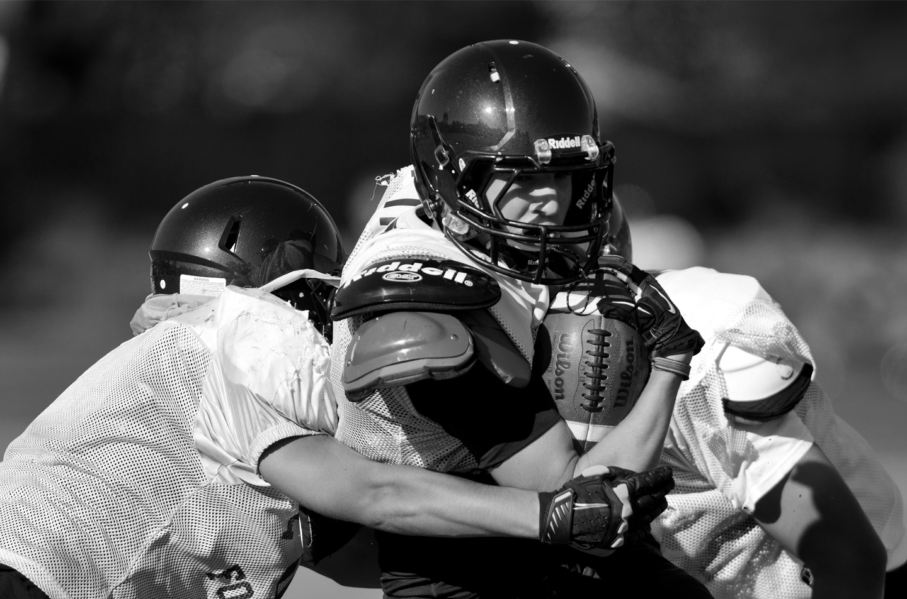
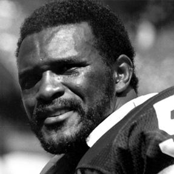
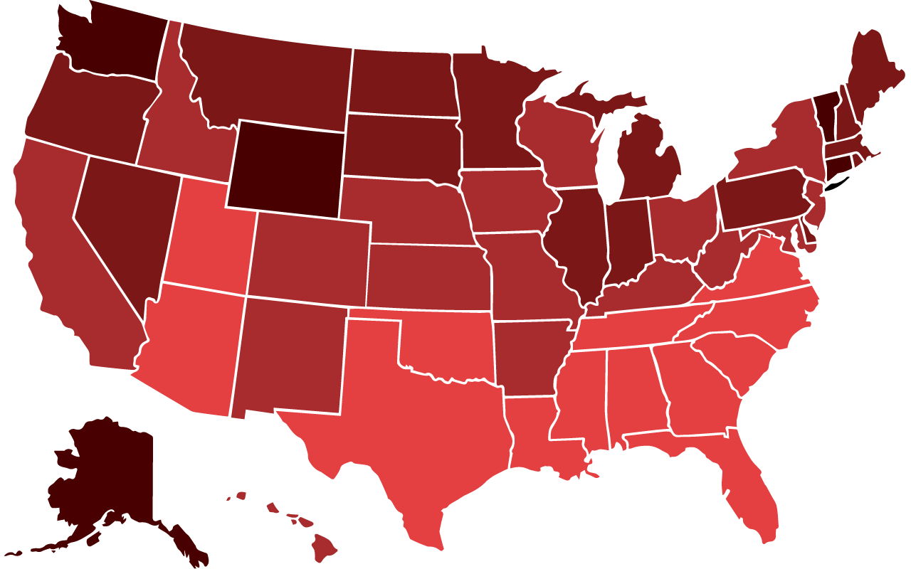
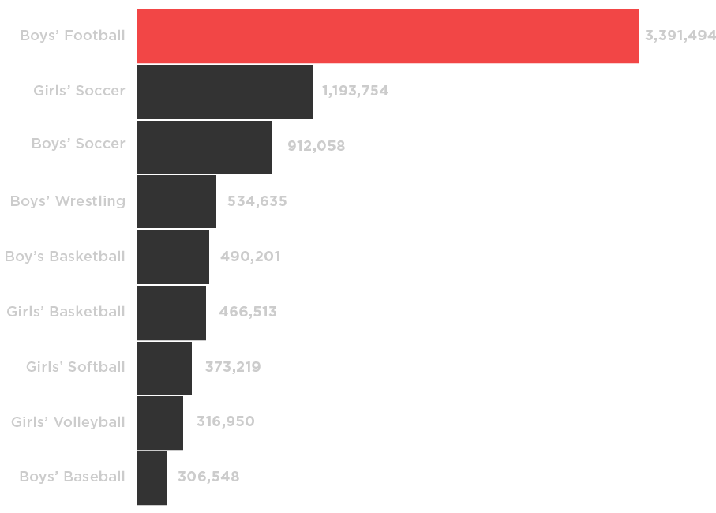
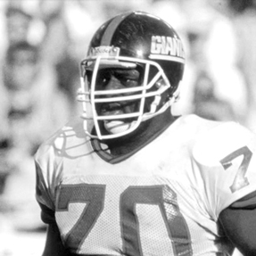

High School
Football Safety

Introduction
From high school, to college, all the way to the NFL, football is the largest and most popular sport in the United States. There are over one million students who participate in high school football, nearly twice the amount who participate in the next most popular sport, track and field.
Football is also arguably the most dangerous sport in the country. There are nearly three times as many injuries in high school football then in any other sport. Former NFL players have shortened life spans along with a reduced quality of life. And most jarringly, even though it is recognized that high school sports are the safest they have ever been, over twelve high school football players die every year.

“I cannot in good conscience
allow my grandson to play
knowing what I know.”
Harry Carson
Pro Football Hall of Fame Linebacker
It is telling that men who have reached the highest level of fame and success in the sport openly acknowledge that football is not a path that they would willingly allow their loved ones to pursue. Something must change in order to protect the children playing this sport.
Over fifteen high school football players die each year.
High School Football Fatalities
According to a study done by the University of North Carolina, two-thirds of all football related deaths between 1931–2014 occurred at the high school level. The study classifies each player's death as either a direct or indirect fatality.
Direct fatalities are “fatalities which resulted directly from participation in the fundamental skills of football.” These include injuries such as spine fractures or head trauma.
Indirect fatalities are “fatalities that are caused by systemic failure as a result of exertion while participating in a football activity.” These include illnesses such as heat stroke or complications from another football related injury.
| Year |
2001 |
2002 |
2003 |
2004 |
2005 |
2006 |
2007 |
| Direct |
3 |
8 |
3 |
2 |
4 |
2 |
1 |
| Indirect |
10 |
7 |
4 |
7 |
8 |
12 |
6 |
| Total |
13 |
15 |
7 |
9 |
12 |
14 |
7 |
| Year |
2008 |
2009 |
2010 |
2011 |
2012 |
2013 |
2014 |
| Direct |
3 |
7 |
2 |
2 |
2 |
0 |
8 |
| Indirect |
7 |
14 |
9 |
11 |
9 |
9 |
6 |
| Total |
10 |
21 |
11 |
13 |
11 |
9 |
14 |
Most deaths related to heat stroke occur during preseason workouts. Two-a-days (practicing twice in the same day) have been called risky by experts. These practices often occur during the hottest months of the year and players are oftentimes not acclimated to the heat and amount of strenuous activity. Two-a-days are prohibited in the NFL and heavily regulated at the college level. However, in high school, they are still fairly common, especially in southern states.
This map shows the reported deaths in youth football from 2000–2015. The color of each state represents the average summer temperature in which players practice. Hover over each circle to learn more about each player.
| 75–79°F |
80–84°F |
85–90°F |
90–95°F |
|
|
|
|

High School
Football Fatalities
- Dylan Jeffries
- (3/4/1996–10/6/2013)
On September 27, 2013, Dylan Jeffries was tackled by two opposing players, causing the back of his helmet to crash against the ground. He was able to slowly get up and take a couple of steps before collapsing.
He was immediately rushed to the hospital and placed in a medically induced coma. Nine days later, he passed away from severe brain swelling. Doctors believe that the cause was Second Impact Syndrome.
- Cam'ron Matthews
- (10/29/1998–10/17/2015)
On Friday October 16, 2015, Cam'ron Matthews collapsed on the sideline of his high school football game. He was airlifted to a local hospital and passed away the next day.
According to his teammates, Matthews had complaints of dizziness shortly before he collapsed.
- Charles Youvella
- (10/29/1998–10/17/2015)
According to coaches and teammates, the hit that caused Charles Youvella's fatal head injury was completely ordinary. He was tackled and the back of his head hit the ground hard, but kept playing. Minutes later, he collapsed on the field.
Charles was conscious when the ambulance drove off, but arrived at the hospital in critical condition. Two days later, he passed away from blunt force trauma to the head.
Nearly half of all high school athlete injuries are football related.
Injuries and Long-Term Effects
Over the past five years, over 3.39 million injuries have been reported by high school athletes playing football. The next closest sport, girl's soccer, has 1.19 million, nearly two thirds less. In total, football accounts for nearly half of all reported injuries in high school sports.

All injuries, no matter how serious, can have lasting effects on a person's long-term health. Torn knee ligaments can lead to cartilage degeneration throughout the injured leg, not just the knee. Former NFL players suffer from severely decreased mobility because of aches and pains caused by injuries sustained during their careers.
Minor injuries add up as well; even if a player never suffers a concussion, there is still a risk for long-term damage. These minor collisions are called repetitive head impacts (RHI). High school players routinely experience around 150 RHI’s per week. Research has shown that players who experience a large amount of RHI’s have more impaired memory than those who are suffering from a concussion.
Football hits can generate over 290G’s of force, nearly 300 times the force of gravity.
Concussions
A concussion is the most common type of traumatic brain injury. It is the result of a violent hit that causes the brain to hit the sides of the skull.
When diagnosed properly, concussions are not life threatening. The danger in football, however, is that many concussions are either unreported or untreated.
“He explained to me that the next hit could possibly kill me...I instantly said to myself, I’m done.”
Adrian Coxson
Former NFL player who retired two weeks into rookie training camp
Second impact syndrome (SIS) occurs when a previously concussed person suffers another brain injury before the first one completely heals. This can lead to severe brain swelling and is oftentimes fatal. Teenagers are at a much greater risk of suffering from SIS—all documented cases, outside of boxing, have occured in adolescents.
US men have a life expectancy of 78.7 years. NFL players have an average lifespan of 55 years.
Brain Disease and NFL Players
The average life span for men in the United states is 78.7 years. However, the life expectancy for men who have played in the National Football League drops dramatically to just 55 years. Therefore, NFL players are expected to die nearly 24 years younger based on their chosen profession.
Along with a much shorter life span, former NFL players are five times more likely to develop any form of mild cognitive impairment. They are also four times more likely to die from Amyotropic Lateral Sclerosis (ALS or Lou Gehrig’s Disease) or Alzheimer’s Disease.
A 2009 study done by the University of Michigan revealed that former NFL players between the ages of 30 and 49 were being diagnosed with Alzheimer's disease 19 times more often than the general population. These former players are also four times more likely to die from Amyotropic Lateral Sclerosis (ALS or Lou Gehrig’s Disease).

“You’ll wish your teams...took better care of the players’ bodies, because the damage you’ll inflict on each other will add up.”
Leonard Marshall
Retired NFL Defensive Lineman
Chronic Traumatic Encephalopathy (CTE) is a degenerative brain disease that is found in people who have suffered repetitive brain trauma. 91 deceased former NFL players of various ages have allowed their brains to be examined by scientists. 87 of them tested positive for CTE, which is 96% of the sample.
CTE, along with Alzheimer’s, ALS, and dementia, are common diagnoses among former NFL players, They are often diagnosed with early-onset versions, which means they develop symptoms at a much younger age. These diseases have symptoms ranging from mild memory loss to complete loss of motor skills.
This timeline shows the lifespans of 20 former NFL players: 16 alive and 4 deceased. Each of these players have been diagnosed with or shown symptoms consistent with brain disease. Hover over each bar to learn more information about the players.
Brain Disease and NFL Players
Andrew Glover
Andrew Glover is a former tight end who played for the Los Angeles Raiders, Minnesota Vikings, and
New Orleans Saints during his ten
year career.
Glover was diagnosed with post-concussion syndrome less than a year after his retirement.
Justin Strzelczyk
Justin Strzelczyk was a former offensive lineman who spent his
entire nine year career with the Pittsburgh Steelers.
He died at the age of 36 in a car accident. He crashed into a tanker
trunk going 90mph while trying to
flee from police.
His autopsy revealed that he was not under the influence at the time of the crash and that he suffered from brain damage. His death began the discussion about the connection between brain damage and football.
Brett Favre
Brett Favre is a former quarterback who played for the Atlanta Falcons, Green Bay Packers, New York Jets, and Minnesota Vikings. His career spanned 20 seasons and holds multiple NFL career records.
In an interview, Favre revealed that he had been struggling from memory loss since the age of 44. Doctors believe that he is suffering from CTE.
Junior Seau
Junior Seau was a former linebacker who played for the San Diego Chargers, the Miami Dolphins, and the New England Patriots. He was posthumously inducted into the Pro Football Hall of Fame in 2015.
In 2012, Seau shot himself in the chest at the age of 43. He was diagnosed with CTE postmortem.
Kevin Turner
Kevin Turner is a former fullback who played for the New England Patriots and the Philadelphia Eagles during his eight year career.
Turner was diagnosed with ALS at the age of 44. He is reliant on oxygen and nutrition tubes and is mostly bedridden.
OJ Brigance
OJ Brigance is a former linebacker who played in the NFL and the CFL for eleven years.
He was diagnosed with ALS at the age of 37 and is wheelchair bound.
Bob Meeks
Bob Meeks is a former center who played a total of eight games for the Denver Broncos.
Despite his short time in the league, Meeks suffers from brain damage believed to be related to his football career.. He is one of the 4500 players suing the NFL for damages.
Ricardo McDonald
Ricardo McDonald is a former linebacker who spent eight years playing professionally in the NFL.
McDonald is one of the 4500 players who are suing the NFL.
Dorsey Levens
Dorsey Levens is a former runningback who played in the NFL for eleven years.
Doctors believe that Levens is suffering from CTE.
Shane Dronett
Shane Dronett was a former defensive lineman who played in the NFL for eleven years. Soon after his retirement, he began experiencing paranoia, mood swings, and confusion.
On January 21, 2009, Dronett threatened his wife with a gun. She was able to escape, and he shot himself. Doctors examined his brain and determined that he suffered from CTE.
Frank Wycheck
Ted Johnson
Ryan Stewart
Kyle Turley
Sean Morey
Steve Gleason
Jamal Lewis
Chris Henry
Chris Henry was a former wide reciever who played five seasons for the Cincinatti Bengals. He was on the team's roster at the time of his death.
On December 16, 2009, Henry fell from the back of a moving truck being driven by his girlfriend. He died the next morning from severe head trauma. Doctors examined his brain and determined that he suffered from CTE, making him the first active player to be diagnosed with the disease.
Tim Shaw
Jovan Belcher
Jovan Belcher was a former linebacker who played for the Kansas City Chiefs. He spent four seasons in the NFL before his death in 2012.
On December 1st, 2012, Belcher shot and killed his longtime girlfriend. He then drove to the Chiefs' practice facility and shot himself in front of two coaches and the team's general manager. Doctors diagnosed Belcher with CTE postmortem.
Football is an inherently violent sport—there is simply no way to guarantee a player’s safety. However, there are ways to minimize the risk of danger and prevent these teenagers from dying. There is no reason for over fifteen kids to die each year from playing the sport.
“When we see young people die suddenly...everybody would like to identify a strategy (to keep) the deaths from happening.”
Dr. Linda Gillam
New York Jets Cardiologist and
Chair of Cardiovascular Medicine
Learning the proper tackling technique decreases the risk of injury for both players involved in the collision. Always keep your head up when going for a tackle. Initiating contact with your head facing down can cause spinal damage, potentially leading to paralysis. Former NFL defensive back Bobby Hosea runs a camp that focuses strictly on tackling with your head up, something that all youth camps should include.
Following practice guidelines is a must in order to keep players safe. Eliminating two-a-days, at least until players have become acclimated to the condtions, would decrease the risk of heat stroke. Young athletes are particularly vulnerable during the first couple weeks of camp because they are not always prepared for the heat and training intensity.
Most importantly, young athletes need to speak up when something feels wrong. Not reporting a head injury can be extremely dangerous, especially for high school players’. This is because teenagers' brains are still developing and even more vulnerable to long term effects.
There needs to be an increased awareness surrounding the dangers in high school football. Fifteen teenagers die every year playing this game, which is unnacceptable. Precautions must be taken. This is not about banning football, it is about saving these players' lives.